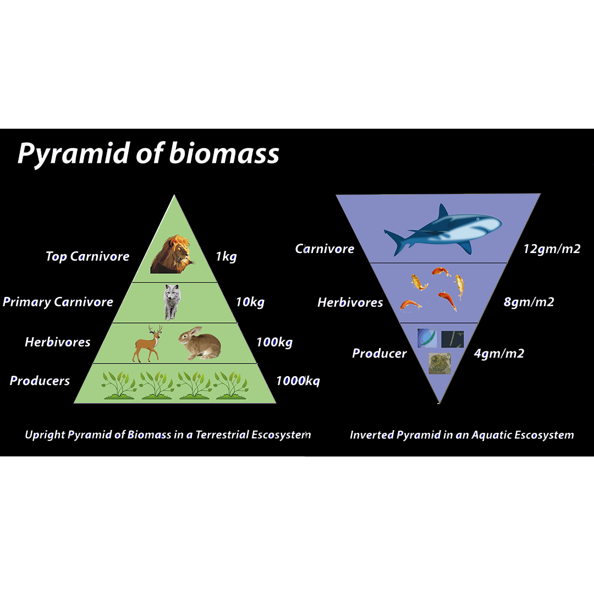

Ecological Pyramids
An ecological pyramid is a graphical representation that shows the relationship between different organisms in an ecosystem based on energy, biomass, or number.
Types of Ecological Pyramids:
1. Pyramid of Numbers
- Shows the number of organisms at each trophic level.
- Usually upright (many producers, fewer top consumers), but can be inverted (e.g., one tree supports many herbivores) or irregular as well.

2. Pyramid of Biomass
- Represents the total dry mass of organisms at each trophic level.
- Typically upright but may be inverted in aquatic ecosystems. 
3. Pyramid of Energy
- Shows the flow of energy from one trophic level to the next.
- Always upright because energy decreases at each level (only ~10% passed on).

Key Points:
- Producers (plants/algae) form the base of all pyramids.
- Energy transfer is inefficient; most energy is lost as heat.
- Pyramids help in understanding ecosystem structure and health.
Written by Kasiban Parthipan